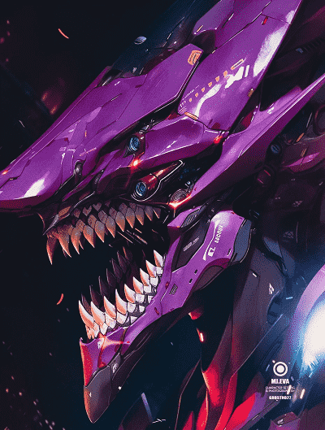

<body>
    <div class="box">
        <div class="main">
            
            <div class="main-text">测试</div>
            <div class="main-text">点击下载选中的 DOM 图片...</div>
        </div>
    </div>

    <script>
        const domToImg = (function () {
            // 转 png 需要的 canvas 对象及其上下文
            const canvas = document.createElement('canvas')
            const context = canvas.getContext('2d')

            // canvas绘制图片元素方法
            const draw = (img) => {
                let width = img.width,
                    height = img.height
                canvas.width = width
                canvas.height = height
                // 画布清除
                context.clearRect(0, 0, width, height)
                // 绘制图片到 canvas
                context.drawImage(img, 0, 0)
            }

            // canvas 画布绘制图片
            const img = new Image()
            let callback = () => {}
            img.onload = function () {
                draw(this)
                if (typeof callback === "function") {
                    callback()
                }
            }

            return {
                dom: null,
                // DOM 变成 svg，并作为图片显示
                dom2Svg(dom) {
                    if (!dom) return this
                    this.dom = dom

                    // 复制 DOM 节点
                    let cloneDom = dom.cloneNode(true)
                    cloneDom.setAttribute(
                        'xmlns',
                        'http://www.w3.org/1999/xhtml'
                    )
                    cloneDom.classList.remove('outline')

                    // 如果有图片，变成 base64
                    let imgDoms = []
                    if (cloneDom.tagName.toLowerCase() == 'img') {
                        imgDoms.push(cloneDom)
                    } else {
                        imgDoms = cloneDom.querySelectorAll('img')
                    }

                    for (const imgDom of imgDoms) {
                        draw(imgDom)
                        imgDom.src = canvas.toDataURL()
                    }

                    const htmlSvg =
                        `data:image/svg+xml;charset=utf-8,<svg xmlns="http://www.w3.org/2000/svg" ` +
                        `width="${dom.offsetWidth}" height="${dom.offsetHeight}" >` +
                        `<foreignObject x="0" y="0" width="100%" height="100%">` +
                        new XMLSerializer().serializeToString(cloneDom) +
                        document.querySelector('style').outerHTML +
                        `</foreignObject></svg>`
                    
                    img.src = htmlSvg
                        .replace(/\n/g, '')
                        .replace(/\t/g, '')
                        .replace(/#/g, '%23')
                    
                    return this
                },
                download(dom) {
                    // 创建隐藏的可下载链接
                    const link = document.createElement('a')
                    // 下载图片文件名就按照时间戳来
                    link.download = new Date().toLocaleString()
                        .replace(/[\s\/\\:]/g, '') + '.png'
                    link.style.display = 'none'
                    callback = () => {
                        link.href = canvas.toDataURL()
                        link.click()
                    }

                    // 把目标 dom 转成 svg
                    this.dom2Svg(dom)
                }
            }
        })()

        // 实例页面的交互代码
        let boxElem = document.querySelector('.box')
        // hover outline
        boxElem.addEventListener('mouseover', function (event) {
            if (event.target !== this) {
                event.target.classList.add('outline')
            }
        })
        boxElem.addEventListener('mouseout', function (event) {
            let el = boxElem.querySelector('.outline')
            if (el) {
                el.classList.remove('outline')
            }
        })
        // 点击并下载图片
        boxElem.addEventListener('click', function (event) {
            let el = event.target
            if (el !== this) {
                domToImg.download(el)
            }
        })
    </script>
</body>

<style>
.main {
    display: flex;
    flex-direction: column;
    justify-content: center;
    align-items: center;
    width: 300px;
    height: 300px;
    padding: 20px;
    text-align: center;
    background-color: #1a1a1a;
    border-radius: 5px;
    border: 1px solid #efefef;
    box-sizing: border-box;
}
.main-img {
    width: 180px;
    height: 180px;
    object-fit: cover;
    border-radius: 50%;
    border: 1px solid #fff;
}
.main-text {
    margin-top: 10px;
    color: #fff;
    font-weight: 600;
}

.outline {
    outline: 4px solid palevioletred;
    outline-offset: -2px;
}
</style>
